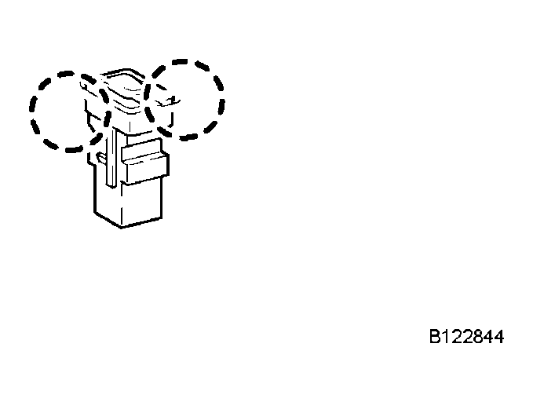

Rear Console Box: Disassembly
REMOVE STEREO JACK ADAPTER ASSEMBLY
Detach the 2 claws and remove the stereo jack adapter.
Disconnect the connectors.
Fig 1: Detaching Claws For Removing Stereo Jack Adapter

Courtesy of © TOYOTA, LICENSE AGREEMENT TMS1002